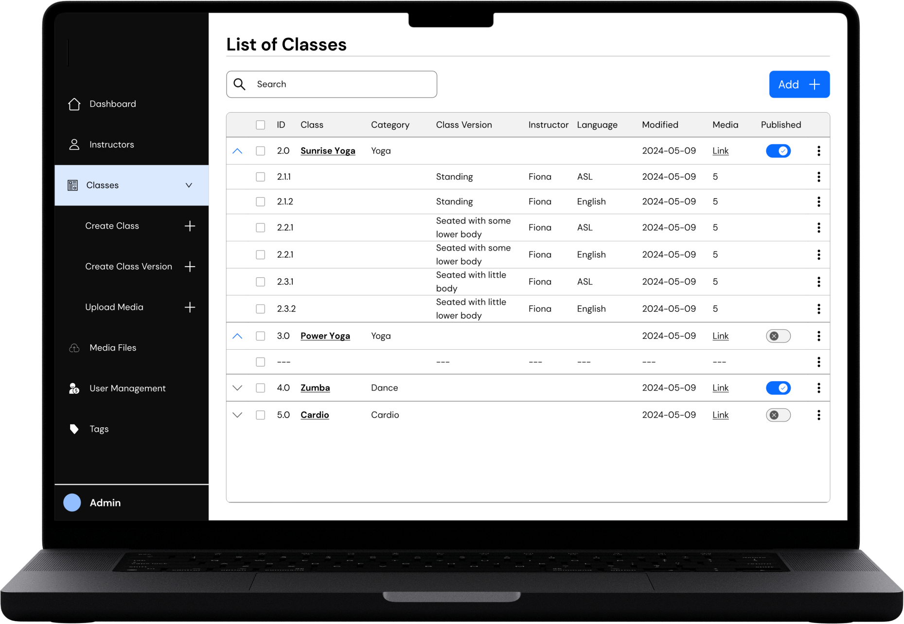

An inclusive fitness app for individuals with different disabilities and creating a space for content creators to create and share accessible exercise classes.
1. Overview
Sekond Skin Society is an inclusive fitness app where people with and without disabilities work out together. As lead designer I owned the end-to-end design of the first release — research, ideation, testing, and low through high fidelity. I also built the foundation of the design system, and the research instruments behind the work: the survey, the interview guide, and the success metrics — and it launched on iOS and Android in Summer 2025.
1.1. The challenge
Most fitness apps assume one kind of body. People who are blind or low vision, Deaf or hard of hearing, or have limited mobility are left to invent modifications mid-workout, fight audio they cannot separate, or exercise alone when they would rather not.
US adults, by disability status
Measure
With a disability
Without a disability
Physically inactive
47.1%
26.1%
Owns a smartphone
72%
88%
Disabled adults are almost twice as likely to be physically inactive — and they are online. The barrier is not the device, it is what runs on it.
The challenge was to build an app that closes that gap — where adapted classes are the product rather than a setting buried inside it, and where two people with different bodies can take the same class together.
1.2. The outcome
A live app on both platforms, with accessibility designed in from the first concept rather than retrofitted before release.
The communityClass versions named up frontTwo versions, one classSeparate audio and caption controls
Live now
Free to download on iPhone and Android
Two pieces of outside evidence say more about how it landed than my own account of the work does.
Verified by Apple8 of 8accessibility features Apple lists as supported, out of the eight it checks for: VoiceOver, Larger Text, Dark Interface, Differentiate Without Colour Alone, Sufficient Contrast, Reduced Motion, Captions and Audio Descriptions.Apple App Store listing
ShortlistedFinalist of threein the Product Design category of the Business Disability Forum's Disability Smart Impact Awards 2026, judged in London.Business Disability Forum
Vetted by screen reader users11 recommendationson AppleVis, the directory blind and low-vision users check to find out whether an app is actually usable before they download it.AppleVis listing
The AppleVis entry is the one I weigh most. An App Store rating can come from anyone; a screen reader user assessing whether every control is labelled is judging the thing the product was designed to get right.
"The app is fully accessible with VoiceOver and is easy to navigate and use."
Sekond Skin Society's accessibility rating on AppleVis
My Role:
Lead Product Designer
Team:
Product Owner 4 Developers Content team CTO
Timeline:
Nov 2023 - Feb 2026
2. Initial Research
When I joined the team, I asked to review the research that had been done before me. A consulting study and an internal survey had already been run. The consulting study, delivered in April 2023 by a five-person team, covered the target market, geography and channels, and set the competitive picture against Wheel With Me Fitness, Adapt to Perform and Peloton. Its finding on those three was specific: all feature app mockups, infographics or instructors, and none showcase people of different ethnicities, body types and abilities.
Two numbers from it stayed with me. One in four women aged 18 to 34 said they wanted more inclusive exercise options, and 82.3% of the survey’s own respondents said what mattered most was going at their own pace — which is an argument for adapted versions of a class rather than a separate, easier one.
2.1. Why this needed to exist
I ran secondary research into the state of fitness and wellness and where its gaps are, because before designing a screen the work had to answer three things: how many people this affects, what the lack of access costs them, and which needs were least well served.
1.3Bpeople worldwide — 16% of the population — live with a significant disabilityWorld Health Organization
70MUS adults report a functional disability — 28.7% of the adult populationCDC BRFSS, 2022
8.0MCanadians aged 15 and over have a disability — 27% of that populationStatistics Canada CSD, 2022
47.1%of US adults with a disability are physically inactive, against 26.1% of those without oneCDC MMWR Vital Signs
3×more likely to have heart disease, stroke, diabetes or cancerCDC Vital Signs
The barrier is access, not ability — and the health consequence is measurable.
2.2. Why these three groups
Three groups were set as the minimum bar the app had to meet. Between them they account for roughly a quarter of the disabled adult population, and each is blocked by a different part of a video fitness class — what you hear, what you see, and what your body can do.
Deaf and hard of hearing
6.2%of US adults report a hearing disability
Instruction is carried by the instructor’s voice, mixed with music the member cannot separate from it — and captions, where they exist at all, are usually burned into the video.
Blind and low vision
5.5%report a vision disability
The workout is demonstrated visually, and the controls around it assume a member who can see them and hit them precisely.
Low mobility
12.2%report a mobility disability — the most common physical type
Movements assume a standing body, so any modification has to be invented by the member part-way through a class.
I started with low-fidelity concepts for the primary use cases and tested those mockups with users before committing to anything visual. The features that came out of that work are below, and the architecture they settled into follows them. What changed between the first concepts and the shipped screens is shown in section 4.
3.2. Key features and impact
Three features, each traced from the research finding that prompted it to the shipped capability you can check in the live app today.
01Low mobility
"I need to see options for modifications of some movements that I can't do due to joint pain."
Became
Adaptive class versions
Every class ships with standing, seated, and seated-without-lower-body variants built in, so nobody has to invent a modification part-way through a workout. Each card names its version and intensity up front, so the choice is made before the class starts rather than during it.
✓ Live: class cards display these version tags in both app stores
02Mixed-ability household
"Need to use an app with my husband who uses a wheelchair."
Became
Split screen
Two adapted versions of the same class play side by side, so two people with different bodies do the same workout together rather than separately.
✓ Live: the feature the company leads with on both store listings
03Deaf and hard of hearing
"Being able to control the volume of the background music without dimming/increasing the instructor's voice."
Became
Independent audio tracks, and captions the member controls
Separate volume for the instructor and the music, so speech can be raised relative to the background rather than everything moving together — alongside captions on every class and an American Sign Language version of each one. Caption size and colour are the member’s to set, and the levels are stepped buttons rather than sliders, which do not ask for sustained fine motor control.
✓ Live: Apple lists Captions and Audio Descriptions among this app's supported accessibility features
3.3. Information architecture
The structure the concepts settled into. Adapted class versions and language sit inside the class itself, so choosing one is part of picking a class rather than a preference set beforehand.
Entry
Sign up non-member
Log in member
Membership options
Subscription & payment
Dashboard
Classes cards carry version, level and length
Instructors added after testing
Filters
Class detail
Class versions standing · seated, no lower body · seated, some lower body
Language American Sign Language
Intensity level 1, 2, 3
Class breakdown warm-up, workout, cool-down
Video player
Split screen two versions at once
Audio settings instructor and music, stepped
Caption settings size and colour
Audio description
Playback speed
Output device
Account
Profile
Membership & payment
4. Design
4.1. Accessibility
Throughout the iterations, I ensured that the MVP designs met stringent accessibility guidelines, including certain color contrast criteria, font sizes, and actionable components such as buttons, tabs, and fields, through continuous feedback from accessibility experts.
4.2. Iterations of the dashboard
The dashboard's purpose was to organize a list of available classes into categories. I tested it with several users to ensure that the browsing and filtering classes experience was easy to understand and follow.
User testing revealed that people prefer to select exercise classes led by instructors who share their experiences or needs (e.g., wheelchair accessibility). To cater to this, a list of instructors has been integrated into the dashboard, allowing users to explore classes and instructors in one place.
Before
Dashboard
After - P1
Dashboard - Classes
After - P2
Dashboard - Instructors
4.3. Iterations of the class detail
A large portion of the time spent in this project was focused on designing and iterating the class details. A number of the iterations along the way are included here.
Before
After
4.3.a. Change: class description
Users indicated that they needed more information for class descriptions. For instance, they liked to know the intensity of the classes and a breakdown of the class content. The breakdown would help them plan their warm-up and cool-down and equipment preprations accordingly.
"I would like to see clear details in the class description about how much time I need to spend on warm-up, the main workout, and cool-down."
The new design (on the right) includes added components for intensity level, category, and class breakdown.
4.3.b. Change: terminology
Based on feedback from the content team, the terminology for intensity levels—previously labelled as beginner, intermediate, and difficult—has been replaced with icons and the designations level 1, level 2, and level 3 to make the vocabulary less imposing.
The class version terminology was updated and standardized. A separate section for languages was also introduced. Previously, American Sign Language (ASL) classes were grouped under class versions as well which had given rise to potentially conflicting options.
The new design shown on the right demonstrates the revised terminology for class versions and introduces a new category for language classifications.
4.4. Iterations of the split screen
A key feature of the app is its ability to display various adaptations of the same class. For instance, it enables a person with low vision to simultaneously participate in the same exercise as someone with limited lower body mobility.
Before
After
The image shows the initial iteration and MVP version showing class details on split screens, showcasing two versions.
4.4.a. Change: audio settings
The design outlined below is for the audio settings that enables users to select their preferred audio track and customize the volume of both the instructor and the music. Previously, I had opted for sliders to control the audio. However, in the following iterations, in order to ensure ease of use for individuals with limited motor skills and low vision, I instead incorporated plus (+) and minus (-) tab buttons in the UI.
These are the iterations of the audio settings, with the most recent version displayed on the right.Text description of the three audio iterations
Three versions of the same Audio Setting panel, left to right.
First. Headed “Select one Audio for both screens”, with the note
“With two screens playing, only one of the instructor audio can be played.” Radio
buttons choose Instructor #1 or #2, a Sync Tracks checkbox sits below, and Music and Audio
each have a drag slider set to 30.
Second. The same panel, with small minus and plus buttons added at either end of
each slider, so a level can be nudged as well as dragged.
Third. The sliders are replaced by large square minus and plus buttons on either
side of a plain track, with the value shown to the right. Type is larger throughout and the
controls are spaced further apart. This is the version that shipped: a stepped control does not
require a drag held to a target, and each press is a single labelled action for a screen
reader.
5. Web Tool for Admins
I also led the design of the web administration panel, which took extensive discussion with the content team, developers and technology leaders to align on.
Most of that discussion was about class metadata, and it was the hardest part of the tool to get right. Every class carries a body position, a language, an instructor, an intensity, a category and a media set — and those fields are what make an adapted version findable rather than buried. If the metadata model is wrong, no amount of filtering on the member side recovers it. Getting the content team to a shared vocabulary for those fields took longer than designing the screens that display them.
The panel was also designed past the size the company was at the time. A tool built only for the classes that existed would have needed replacing the moment the library grew or a second admin joined, so it assumes more classes, more instructors and more than one person managing them.
Use Cases/Workflow
User Testing
Wireframes
The image represents a snapshot of the admin panel, which enables the administrator to manage class and instructor information, media files, users, and content tags.

List of classes and their class versionsText description of the admin panel table
The web administration panel, shown on a laptop. A dark sidebar lists Dashboard, Instructors and
Classes — expanded to Create Class, Create Class Version and Upload Media — then Media
Files, User Management and Tags, with an Admin account at the foot.
The main pane is headed List of Classes, with a search field and an Add button.
The table columns are ID, Class, Category, Class Version, Instructor, Language, Modified, Media
and Published.
Each class expands to show its versions. Sunrise Yoga, a Yoga class, holds six rows pairing a body
position with a language: Standing in ASL and in English, Seated with Some Lower Body in ASL and
in English, and Seated with Little Lower Body in ASL and in English — all taught by Fiona,
each with five media files. Power Yoga, Zumba and Cardio follow, with published toggles on or
off.
The structure is the point: a class is not one video with settings attached, it is a set of
versions the content team creates and publishes individually.
6. Defining success
The app shipped without an agreed definition of working. Before it could be improved on evidence rather than opinion, the measures had to be chosen, agreed with the business, and made collectable.
6.1. The metrics, and why each one
Four measure the experience, two answer questions the business had asked. Each is paired with a published average, so a first reading means something on its own rather than only in comparison with a later one.
Task completion rate benchmark 78%
Whether people can finish what they came to do, recorded as yes, no, or partially — the middle case matters, because a member who completes a task by working around the interface has not really completed it.
Time on task
Efficiency. It matters more than usual here, because assistive technology adds steps — a screen reader user moving through a screen control by control will always be slower, and the number is only useful read against that.
Emotional response
Read separately from satisfaction, because they are not the same thing. A task can be easy and still feel patronising, and for this product that distinction is the whole point.
Error count
Where the interface actively misleads, as opposed to where it is merely disliked. Errors point at a specific control; satisfaction scores do not.
Single Ease Question benchmark 5.1 of 7
One question after each task, so difficulty is attributed to the task that caused it rather than to the session as a whole.
System Usability Scale benchmark 68
Perceived usability of the product overall, and the most widely published score available — which makes it the easiest number to defend in a room that has never run a usability test.
Frequency of use, and disability status of members
The two the leadership team needed. Frequency is the engagement metric the business already tracked; the share of members who are disabled answers whether the product is reaching the people it was built for — which no usability score can tell you.
SUPR-Q and the SUM technique were considered and set aside: SUPR-Q reads across usability, trust, appearance and loyalty, and SUM folds completion, time, errors and ease into a single figure per task. Both are stronger with a larger sample than this product could supply at the time.
6.2. The research behind them
Feedback was collected two ways: a survey sent to members, and a running document where anything reported by anyone — members, the internal team, external reviewers — could be logged in one place rather than living in whoever’s inbox it arrived in.
The survey was built in three sections against the three things worth asking about: content, accessibility, and the split screen. Three questions to open — frequency of use, disability status, assistive technology — then nine rating questions each with an optional box for the reasoning behind the score, and a closing question asking whether the respondent would join a follow-up interview.
The ratings run one to seven rather than one to five. A wider scale asks people to discriminate more finely, which makes the reasoning box more likely to be filled in, and the extra points give a mid-range answer somewhere to sit other than the middle. Pairing every score with an optional “why” is what turned the survey from a set of numbers into something that explained itself.
Alongside the leadership interview and the survey:
Desk research on measurement instruments. Reading up on SEQ, SUS, SUPR-Q and SUM, their published averages and where each is appropriate, rather than inventing a scale. Also on measuring emotion specifically — CSUQ, Product Reaction Cards, UEQ and AttrakDiff — and the distinction between measuring how a design feels and measuring what someone feels using it.
A usability study designed for twenty participants, split into members and non-members, over five tasks: signing up, browsing and filtering, playing a class and adjusting audio, using the split screen, and buying a membership. Forty-five minutes each, remote, with the participant sharing their screen, and a Single Ease Question after every task.
A protocol that changed by group. With Deaf and hard of hearing participants, captions, audio settings and the ASL classes. With blind and low vision participants, how the app behaves under the assistive technology they already use. Instructors ran the same tasks as members. Running one identical session for everyone would have tested the wrong things.
Expert review of the survey. Three revisions before it was sent, reviewed by two colleagues and an external senior researcher.
A feedback collection system. Every issue given a severity — critical, moderate, minor, or suggestion — and a type, so the same problem reported five ways counts once and can be ranked against everything else.
An external accessibility review of the live app, and quality assurance testing against assistive technology.
6.3. What it surfaced
The survey went through three revisions before it was sent, reviewed by two colleagues and by an external senior researcher. The critique was of the instrument rather than the interface, and most of it was about not putting the burden of a badly built question onto the person answering it:
Widen the disability categories. Cover sensory, mental health, cognitive and intellectual, medical, neurological and mobility disability, rather than the narrower set the draft offered.
Say “mobility disability”, not “wheelchair or assistive device user”. The equipment is not the person, and naming it excludes anyone whose mobility disability does not involve a device.
Follow the order people meet the app. Ask about signing up and finding a class before asking about following the workout, so the survey walks the same path the member did.
Move the assistive technology question to the start. It was two-thirds of the way down, after several questions whose answers depend on it.
Use conditional logic instead of asking people to skip. The draft told respondents to skip questions that did not apply; the follow-ups should simply not appear.
Label the sections so people know what they are about to be asked before they start.
Settle the scale direction — whether 1 should mean very easy or very difficult — rather than leaving it to convention.
Two of these are worth separating out, because they are not survey admin. Replacing skip instructions with conditional logic, and moving the assistive technology question to the top, both reduce what the respondent has to carry — and the people most affected by a long, badly ordered form are the ones the product exists for.
The accessibility review returned ten issues. No dark mode, flagged for low vision and light sensitivity. Text cut off across the app. Carousels with no cue that they were carousels, and invisible to low-vision tooling. Video controls without enough contrast. A back gesture that failed inside the captions and audio menus, stranding screen reader users. Sliders whose touch targets were too small and too low-contrast to use comfortably.
It’s very unclear what a second screen is for or how it works.
External accessibility review of the live app
That is the split screen — the feature the company leads with on both store listings, and the one this case study opens on. The survey returned the same verdict independently. Finding it is what the measurement was for: without it, the feature would have gone on being described as the product’s strength while confusing the people it was built for. The next step I set was A/B testing alternatives rather than defending the design that existed.
Two findings were already answered. The slider criticism is the problem the stepped audio controls in section 4.4 were built to solve, and quality assurance had turned up that iOS was not announcing the version tags — the Standing and ASL labels the whole approach depends on being read aloud.
7. Outcome
Where the product stood in December 2025, the first full reporting point after launch.
589app downloads since launch, at the end of FebruarySekond Skin Society, December 2025
68free trials started on iOS — Google does not report trial dataSekond Skin Society, December 2025
61paying membersSekond Skin Society, December 2025
The largest member demographic is people who are blind.
Membership breakdown · December 2025. Based on feedback sessions where members chose to disclose — the app collects no personal data.
That distribution is the result I weigh most. A general fitness product with accessibility features added late would be unlikely to see blind members become its largest group.
21reviews across the two app stores
11recommendations on AppleVis, the directory blind and low-vision users check before downloadingAppleVis listing
8 of 8accessibility features Apple lists as supported, out of the eight it checks forApple App Store listing
The app was also shortlisted as one of three finalists in the Product Design category of the Business Disability Forum’s Disability Smart Impact Awards 2026.
8. Learning Experience
8.1. How the work held up
Of those reviews, the assessment that mattered most to me came from an accessibility professional who is blind, reviewing the app for the Blind Institute of Technology, because they tested the two decisions I was least certain about.
"The implementation of the music and voice is perfect. Having the option stepper control while also slider controls for balancing the audio and music is perfect… I also took a look at the captions and found these to be perfect as well. I was able to see them on my braille display while the speaker was speaking. This particular feature has only been available through Apple's TV Plus app and it's invaluable for people who need the feature."
Accessibility review · Blind Institute of Technology
Both points landed on decisions rather than defaults. The stepped controls were chosen for people with limited fine motor control, and this review confirms they hold up for someone navigating by screen reader too. Captions readable on a refreshable braille display depend on captions being real text rather than burned into the video — a distinction that only surfaces when somebody tests with hardware most teams never have in the room.
8.2. What I would carry forward
Through this project I gained valuable experience designing with Agile development teams. I learned to involve developers from the beginning, to share Figma files with them continuously rather than at handover, and to take their input on what could be implemented quickly and lightly.
In one instance I had designed a page that would have been computationally taxing to run. Based on their feedback I rebuilt parts of it to be lighter, which showed me the value of asking for developer input several sprints before implementation rather than at the end.